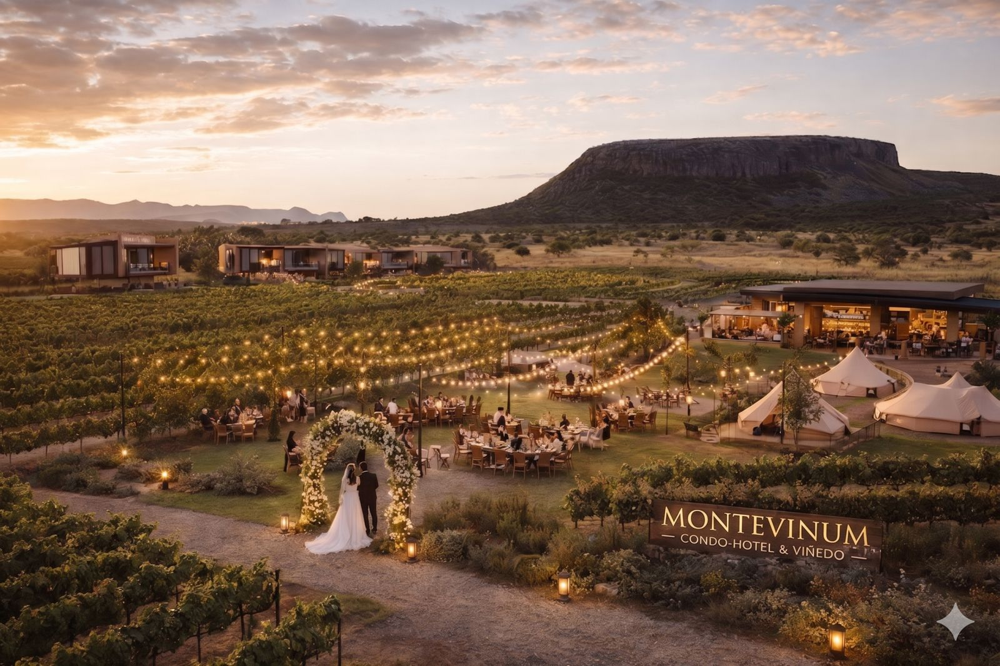
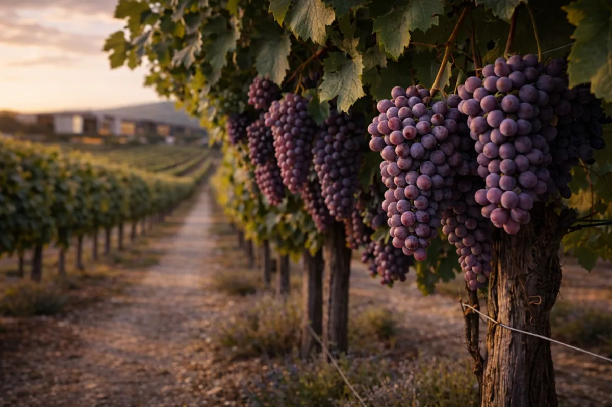
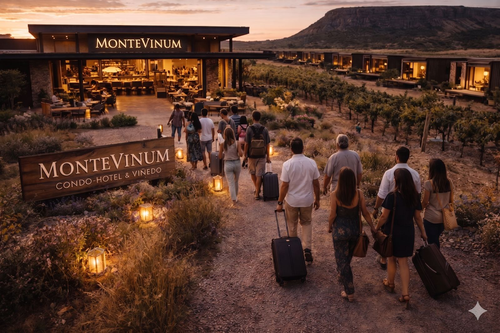

Turismo & Hospitalidad · Valle de la Trinidad, Querétaro
Monte Vinum
Donde la naturaleza, el vino y la hospitalidad se unen en armonía
Donde la naturaleza, el vino y la hospitalidad se unen en armonía
Monte Vinum es un desarrollo inmobiliario y turístico de alto valor ubicado en el Valle de la Trinidad, Tequisquiapan, Querétaro. Concebido como un destino integral donde la naturaleza, el vino, la hospitalidad y las celebraciones conviven en perfecta armonía.
El proyecto combina viñedos productivos, residencias, ecolofts bajo un modelo fraccional, glamping, restaurante-bar, eventos sociales y bodas destino, creando un ecosistema autosustentable con múltiples fuentes de generación y una fuerte propuesta experiencial.

Hectáreas de viñedo con producción propia de vino. Cava, catas guiadas y experiencias enológicas para visitantes y residentes.
Residencias y ecolofts bajo modelo fraccional que combinan propiedad con experiencia vacacional de lujo en el viñedo.
Gastronomía de autor con maridaje de vinos de la casa en un entorno arquitectónico único con vistas panorámicas al viñedo.
Venue exclusivo para bodas y eventos sociales de alto nivel con capacidad para 300+ invitados en entorno de viñedo.
Zona de piscina, jardines curados y áreas de descanso integradas al paisaje natural del Valle de la Trinidad.
Modelo de negocio con múltiples fuentes de actividad: turismo, hospitalidad, producción vinícola y eventos.



Tequisquiapan, Querétaro, es uno de los destinos turísticos más emblemáticos del centro de México. Conocido por sus viñedos, quesos artesanales y clima privilegiado, el Valle de la Trinidad ofrece el entorno perfecto para un desarrollo inmobiliario turístico de alto valor.
Contáctanos para conocer más sobre oportunidades de participación, adquisición de propiedades y experiencias exclusivas en nuestro destino vitivinícola.